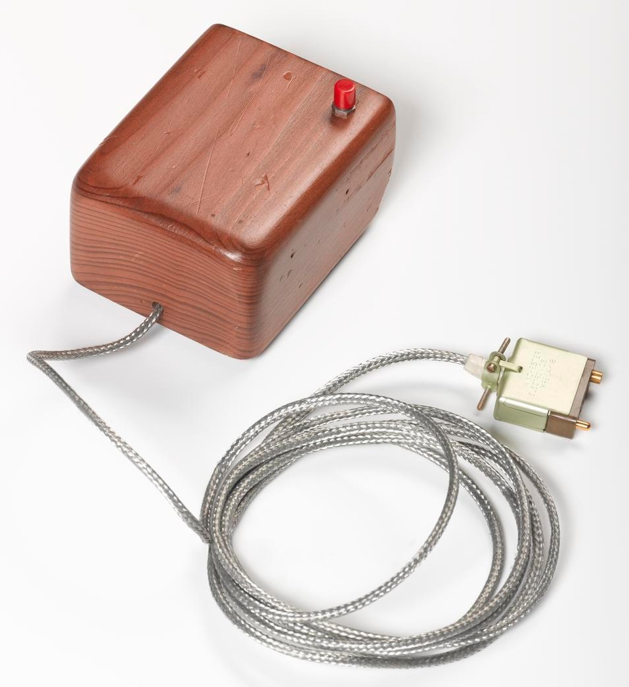

Douglas Engelbart: Augmenting Human Intellect
Douglas Engelbart (1925–2013) was not merely an inventor; he was a philosopher of the digital age. While others saw computers as arithmetic machines or data storage vaults, Engelbart envisioned them as tools to "augment" the human intellect—extending our ability to solve complex, global problems through collaborative technology.
The Birth of the Mouse
Working at the Stanford Research Institute (SRI), Engelbart and his lead engineer, Bill English, constructed the first prototype of a hand-held device for interacting with a graphical display. The original mouse was a simple wooden block with two metal wheels—one for horizontal movement and one for vertical—and a single red button on top. It was officially called the "X-Y Position Indicator for a Display System," but the team quickly nicknamed it the "mouse" due to the cord tail exiting the back.

The "Mother of All Demos"
On December 9, 1968, Engelbart delivered a 90-minute live presentation at the Fall Joint Computer Conference in San Francisco. Using his **oN-Line System (NLS)**, he demonstrated technologies that would not become mainstream for decades: hypertext, object linking, dynamic file linking, and shared-screen video conferencing. This event is now legendary in computing history as the moment the modern computer interface was born.
"The better we get at getting better, the faster we will get better." — Douglas Engelbart
Patent US3541541A
Engelbart received U.S. Patent 3,541,541 for his "X-Y Position Indicator." While SRI eventually licensed the technology to Xerox and Apple, Engelbart never received royalties for his invention. For him, the mouse was just one small piece of a much larger vision for collaborative, network-based knowledge work.
National Medal of Technology
President Bill Clinton awarded Engelbart the National Medal of Technology, the nation's highest honor for technological innovation. The award recognized his role in "creating the foundations of personal computing" and his lifelong commitment to human-centric design.
References
- Engelbart, D. C. (1962). Augmenting Human Intellect: A Conceptual Framework. SRI International.
- Bardini, T. (2000). Bootstrapping: Douglas Engelbart, Coevolution, and the Origins of Personal Computing. Stanford University Press.
- Computer History Museum. "Douglas Engelbart: The Mother of All Demos."
- Wikimedia Commons. "Category:Douglas Engelbart's prototype mouse."